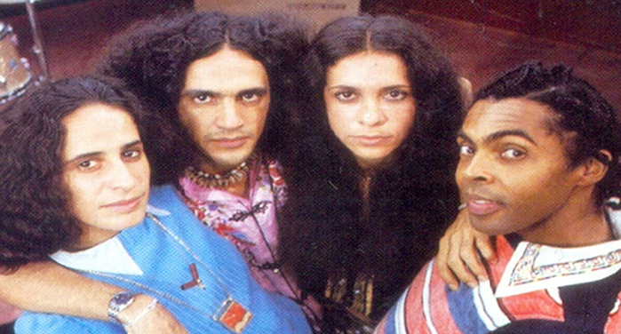
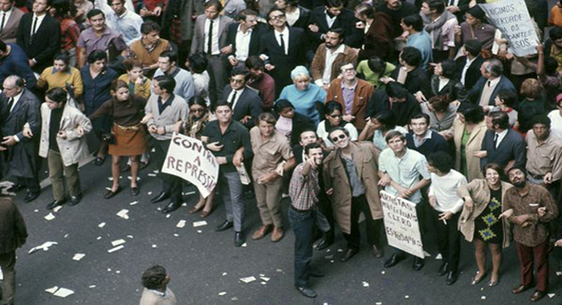
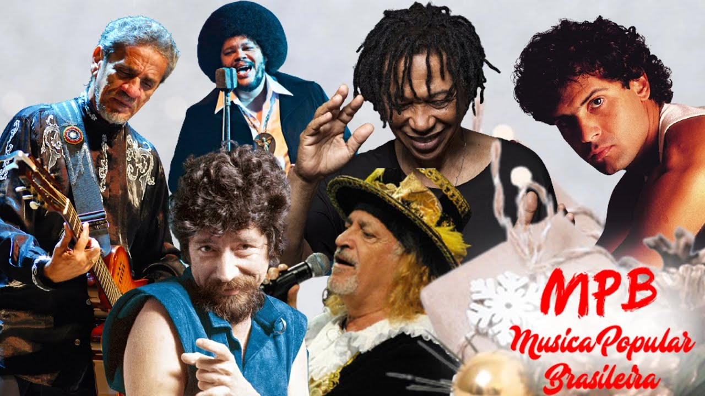

Login realizado com sucesso
Embarque nessa viagem do tempo
e relembre as melhores musicas
populares brasileira
1960 - O inicio de uma historia
A MPB (Música Popular Brasileira), surgiu na década de 60, durante a Ditadura Militar no Brasil. Como uma
espécie
de sucessão à Bossa Nova, a MPB misturou os ritmos desse gênero musical com os movimentos musicais dos Centros
Populares de Cultura da União Nacional dos Estudantes. Nessa época, artistas como Chico Buarque, Tom Jobim,
Caetano Veloso, Gilberto Gil, João Gilberto e Elis Regina ganharam destaque e se tornaram referências da MPB.

1960 - O contexto histórico
Por conta do contexto histórico em que o gênero surgiu, a MPB foi marcada por um forte engajamento político e
social, refletindo a efervescência cultural e as lutas da época. A música se tornou uma forma de expressão e
resistência, retratando as contradições e desigualdades do país.

1960 - O contexto histórico
Por conta do contexto histórico em que o gênero surgiu, a MPB foi marcada por um forte Na década de 70, 80
surgiram novos artistas que misturavam diversos estilos, como a música regional, o rock e o jazz. Artistas
como Gilberto Gil, Caetano Veloso e Chico Buarque continuaram a produzir músicas de grande sucesso, enquanto
novos talentos como Tim Maia, Raul Seixas e Rita Lee começaram a lançar seus primeiros álbuns.



/i.s3.glbimg.com/v1/AUTH_59edd422c0c84a879bd37670ae4f538a/internal_photos/bs/2023/a/F/wToBABQmAwaRXpux9fnw/raulkrigcapa.jpg)